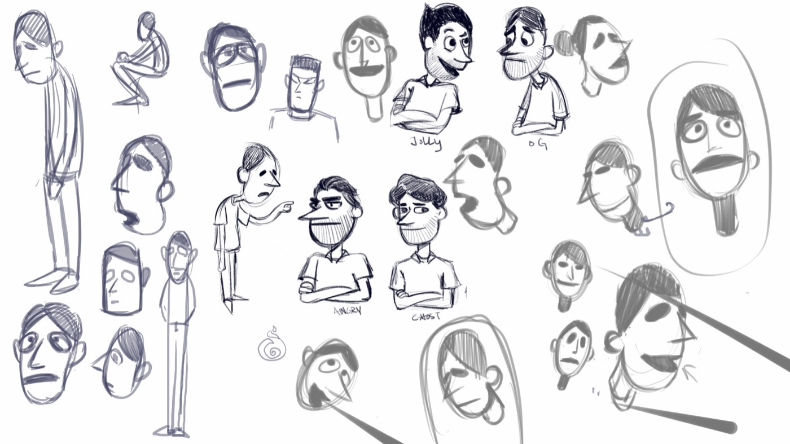
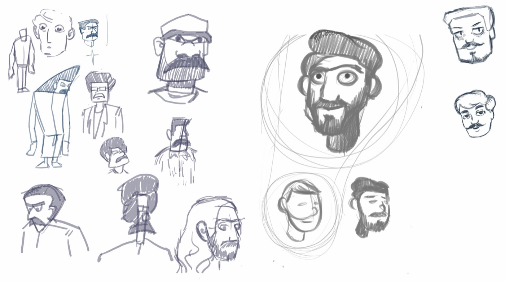
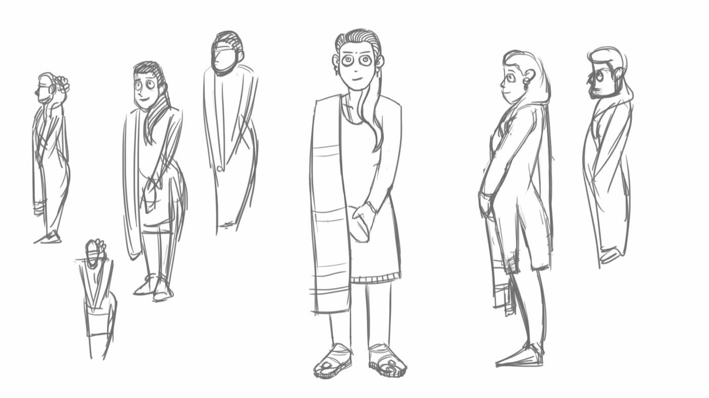

Madan and Family
A young man with dissociative identity disorder discovers that one of his four personalities is an actual ghost.
A graduation short film, co-written, designed, and animated with my classmate Nilesh.
Madan and Family follows Madan, a young man living with dissociative identity disorder, and the three other personalities he's built over a lifetime to cope: Gagan, formed out of anger when he was bullied at school; Gokul, a jolly personality he leaned on when he couldn't make friends; and Mohandas, a brave alter he created after a dare to walk through a haunted house alone. On a date with Jyothi, Madan introduces her to his alters out of curiosity — but Mohandas overreacts and misbehaves, ending the date badly. The next morning Madan wakes up back inside the haunted house, standing over a body, with no memory of how he got there and no sign of Mohandas anywhere in his head. What he finds inside forces Madan, Gagan, and Gokul to confront what Mohandas actually is.
Character design
Nilesh and I split the cast and each built out a full character bible — turnarounds, expression sheets, gesture studies, and colour exploration — before any animation started.



From storyboard to screen
The whole film was boarded shot by shot before we touched the render engine, so blocking, staging, and pacing were locked early.
129 shotsView the full storyboard
Key scenes
Three sequences carry most of the story: the haunted house where Mohandas is born, the classroom where Madan is bullied, and the restaurant where his date with Jyothi unravels.